目录
对比表示学习的目的是学习一个嵌入空间，其中相似的样本对彼此靠近，而不相似的样本则相距较远。对比学习既可以应用于有监督场景，也可以应用于无监督场景。在处理无监督数据时，对比学习是自监督表示学习中最强大的方法之一。
对比训练目标#
在对比学习早期版本的损失函数中，每次仅涉及一个正样本和一个负样本。最近的训练目标趋势是在一个批次中包含多个正负样本对。
对比损失#
对比损失（Chopra et al. 2005）是最早以对比方式用于深度度量学习的训练目标之一。
给定输入样本列表\{ \mathbf{x}_i \}，每个样本对应L个类别中的标签y_i \in \{1, \dots, L\}。我们希望学习一个函数f_\theta(.): \mathcal{X}\to\mathbb{R}^d，将x_i编码为嵌入向量，使得同类样本的嵌入相似，不同类样本的嵌入差异很大。因此，对比损失接受一对输入(x_i, x_j)，当它们来自同一类别时最小化嵌入距离，否则最大化距离。
其中\epsilon是一个超参数，用于定义不同类别样本之间的下界距离。
三元组损失#
三元组损失最初在 FaceNet（Schroff et al. 2015）论文中提出，用于学习同一人在不同姿势和角度下的面部识别。
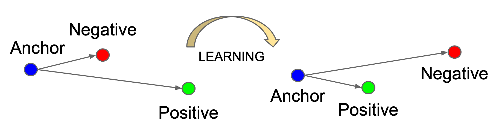
给定一个锚点输入\mathbf{x}，我们选择一个正样本\mathbf{x}^+和一个负样本\mathbf{x}^-，即\mathbf{x}^+和\mathbf{x}属于同一类别，而\mathbf{x}^-来自另一个不同类别。三元组损失通过以下公式同时最小化锚点\mathbf{x}与正样本\mathbf{x}^+之间的距离，并最大化锚点\mathbf{x}与负样本\mathbf{x}^-之间的距离：
其中边际参数\epsilon被设置为相似对与不相似对距离之间的最小偏移量。
选择具有挑战性的\mathbf{x}^-对真正提升模型至关重要。
提升结构化损失#
提升结构化损失（Song et al. 2015）利用一个训练批次内的所有成对边来提高计算效率。
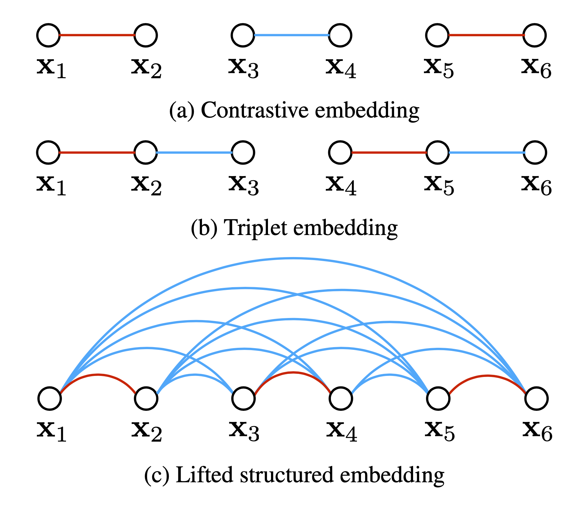
令D_{ij} = | f(\mathbf{x}_i) - f(\mathbf{x}_j) |_2，结构化损失函数定义为
其中\mathcal{P}包含正样本对集合，\mathcal{N}是负样本对集合。注意，密集的成对平方距离矩阵可以在每个训练批次中轻松计算。
\mathcal{L}_\text{struct}^{(ij)}中的红色部分用于挖掘难负样本。但它不够平滑，在实践中可能导致收敛到不良局部最优。因此，它被放宽为：
论文中还提出，通过主动引入少量随机正样本对对应的困难负样本来提升每个批次中负样本的质量。
N-pair 损失#
多类 N-pair 损失（Sohn 2016）将三元组损失推广到包含多个负样本的比较。
给定一个包含一个正样本和N-1个负样本的(N + 1)-元组训练样本\{ \mathbf{x}, \mathbf{x}^+, \mathbf{x}^-_1, \dots, \mathbf{x}^-_{N-1} \}，N-pair 损失定义为：
如果我们每个类别只采样一个负样本，它就等价于多类分类的 softmax 损失。
NCE#
噪声对比估计（Noise Contrastive Estimation，简称 NCE）是由Gutmann & Hyvarinen在2010年提出的一种用于估计统计模型参数的方法。其核心思想是通过 logistic 回归将目标数据与噪声区分开来。关于 NCE 如何用于学习词嵌入的更多内容可参见词嵌入学习。
令\mathbf{x}为目标样本\sim P(\mathbf{x} \vert C=1; \theta) = p_\theta(\mathbf{x})，\tilde{\mathbf{x}}为噪声样本\sim P(\tilde{\mathbf{x}} \vert C=0) = q(\tilde{\mathbf{x}})。注意 logistic 回归对 logit（即对数几率）建模，这里我们希望对来自目标数据分布而非噪声分布的样本u的 logit 进行建模：
使用 sigmoid \sigma(.)将 logit 转换为概率后，即可应用交叉熵损失：
这里列出的是仅使用一个正样本和一个噪声样本的原始 NCE 损失形式。在后续许多工作中，包含多个负样本的对比损失也被广泛称为 NCE。
InfoNCE#
CPC（自监督表示学习；van den Oord, et al. 2018）中的 InfoNCE 损失受 NCE 启发，使用分类交叉熵损失在一组无关噪声样本中识别正样本。
给定上下文向量\mathbf{c}，正样本应从条件分布p(\mathbf{x} \vert \mathbf{c})中抽取，而N-1个负样本则从提案分布p(\mathbf{x})中抽取，该分布与上下文\mathbf{c}无关。为简洁起见，我们将所有样本标记为X=\{ \mathbf{x}_i \}^N_{i=1}，其中只有一个\mathbf{x}_\texttt{pos}是正样本。我们正确检测到正样本的概率为：
其中打分函数为f(\mathbf{x}, \mathbf{c}) \propto \frac{p(\mathbf{x}\vert\mathbf{c})}{p(\mathbf{x})}。
InfoNCE 损失优化正确分类正样本的负对数概率：
f(x, c)估计密度比\frac{p(x\vert c)}{p(x)}的事实与互信息优化有联系。为了最大化输入x和上下文向量c之间的互信息，我们有：
其中蓝色对数项由f估计。
对于序列预测任务，CPC 不是直接建模未来观测p_k(\mathbf{x}_{t+k} \vert \mathbf{c}_t)（这可能代价很高），而是建模一个密度函数来保留\mathbf{x}_{t+k}和\mathbf{c}_t之间的互信息：
其中\mathbf{z}_{t+k}是编码后的输入，\mathbf{W}_k是一个可训练的权重矩阵。
Soft-Nearest Neighbors 损失#
Soft-Nearest Neighbors 损失（Salakhutdinov & Hinton 2007，Frosst et al. 2019）将其扩展到包含多个正样本的情况。
给定一批样本\{\mathbf{x}_i, y_i)\}^B_{i=1}，其中y_i是\mathbf{x}_i的类别标签，以及一个用于衡量两个输入之间相似性的函数f(.,.)，温度为\tau的软近邻损失定义为：
温度\tau用于调节表示空间中特征的集中程度。例如，在低温度下，损失主要由小距离主导，高度分离的表示贡献很小，变得无关紧要。
通用设置#
我们可以放宽软近邻损失中“类别”和“标签”的定义，通过数据增强等方式从无监督数据中构造正负样本对，例如对原始样本添加噪声版本。
最近的大多数研究遵循以下对比学习目标定义，以包含多个正负样本。根据（Wang & Isola 2020）的设置，令p_\texttt{data}(.)为\mathbb{R}^n上的数据分布，p_\texttt{pos}(., .)为\mathbb{R}^{n \times n}上正样本对的分布。这两个分布应满足：
为了学习一个编码器f(\mathbf{x})来得到 L2 归一化的特征向量，对比学习目标为：
关键成分#
强数据增强#
给定一个训练样本，需要使用数据增强技术生成其噪声版本作为正样本输入到损失中。合适的数据增强设置对于学习良好且泛化性强的嵌入特征至关重要。它在不改变语义含义的前提下引入非本质的变化，从而促使模型学习表示中的本质部分。例如，SimCLR 的实验表明，随机裁剪和随机颜色失真的组合对于学习图像视觉表示的良好性能至关重要。
大批量大小#
在训练中使用大批量大小是许多对比学习方法成功的关键成分之一（例如 SimCLR、CLIP），尤其是在依赖批内负样本时。只有当批量足够大时，损失函数才能覆盖足够多样化的负样本集合，对模型学习有意义的区分不同样本的表示构成足够挑战。
难负样本挖掘#
难负样本应与锚点样本具有不同标签，但嵌入特征与锚点嵌入非常接近。在有监督数据集中，由于可以访问真实标签，很容易识别特定任务的难负样本。例如，在学习句子嵌入时，我们可以将 NLI 数据集中标记为“contradiction”的句子对视为难负样本对（例如 SimCSE），或者使用 BM25 返回的关键词匹配最多的前几位错误候选作为难负样本（如何构建开放域问答系统？；Karpukhin et al., 2020）。
然而，当我们希望保持无监督时，进行难负样本挖掘会变得棘手。增大训练批量大小或记忆库大小可以隐式引入更多难负样本，但作为副作用会导致较大的内存开销。
Chuang et al. (2020)研究了对比学习中的采样偏差并提出了去偏损失。在无监督设置下，由于我们不知道真实标签，可能会意外采样到虚假负样本。采样偏差可能导致性能显著下降。
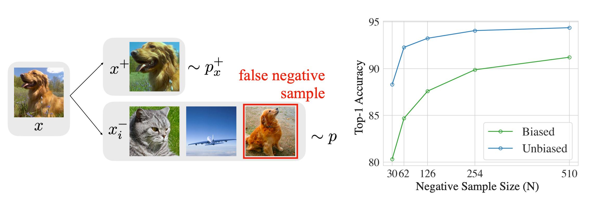
假设锚点类别c的概率是均匀的\rho(c)=\eta^+，观察到不同类别的概率为\eta^- = 1-\eta^+。
当我们采样\mathbf{x}^-时，无法访问真实的p^-_x(\mathbf{x}^-)，因此\mathbf{x}^-可能以概率\eta^+从（不希望的）锚点类别c中采样。实际采样数据分布变为：
因此我们可以使用p^-_x(\mathbf{x}’) = (p(\mathbf{x}’) - \eta^+ p^+_x(\mathbf{x}’))/\eta^-对\mathbf{x}^-进行采样以对损失去偏。有了来自p的N个样本\{\mathbf{u}_i\}^N_{i=1}和来自p^+_x的M个样本\{ \mathbf{v}_i \}_{i=1}^M，我们可以估计对比学习损失分母中第二项\mathbb{E}_{\mathbf{x}^-\sim p^-_x}[\exp(f(\mathbf{x})^\top f(\mathbf{x}^-))]的期望：
其中\tau是温度，\exp(-1/\tau)是\mathbb{E}_{\mathbf{x}^-\sim p^-_x}[\exp(f(\mathbf{x})^\top f(\mathbf{x}^-))]的理论下界。
最终的去偏对比损失如下：
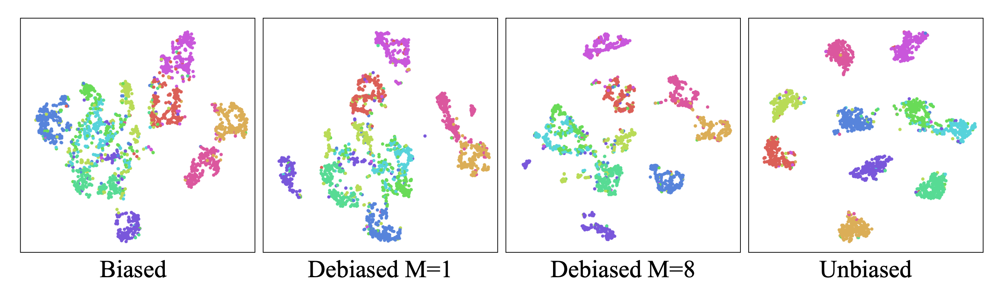
遵循上述符号，Robinson et al. (2021)修改了采样概率，通过将概率p^-_x(x’)按其与锚点样本的相似性成比例上调来针对难负样本。新的采样概率q_\beta(x^-)为：
其中\beta是一个需要调节的超参数。
我们可以使用重要性采样估计分母中的第二项\mathbb{E}_{\mathbf{x}^- \sim q_\beta} [\exp(f(\mathbf{x})^\top f(\mathbf{x}^-))]，其中两个配分函数Z_\beta, Z^+_\beta都可以通过经验估计。
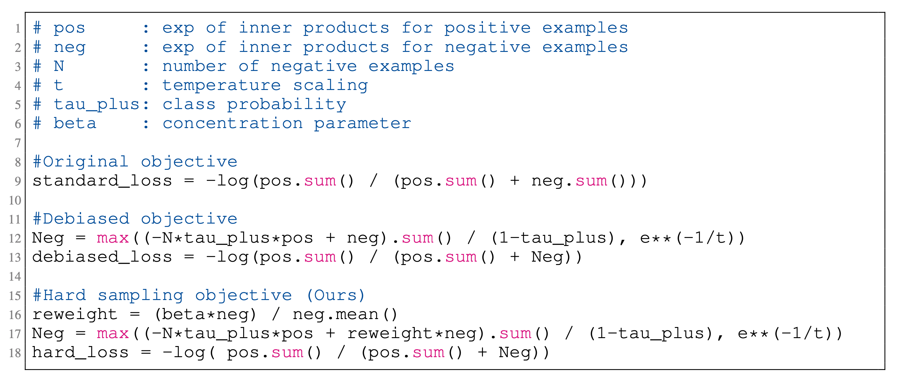
视觉：图像嵌入#
图像增强#
视觉领域的大多数对比表示学习方法都依赖于通过一系列数据增强技术创建一个样本的噪声版本。增强应显著改变其视觉外观，但保持语义含义不变。
基础图像增强#
有许多方法可以在保留语义含义的同时修改图像。我们可以使用以下任意一种增强，或多种操作的组合。
增强策略#
许多框架被设计用于学习良好的数据增强策略（即多个变换的组合）。以下是一些常见方法。
图像混合#
图像混合方法可以从现有数据点构造新的训练样本。
并行增强#
这类方法为一个锚点图像生成两个噪声版本，并旨在学习这样的表示：这两个增强样本共享相同的嵌入。
SimCLR#
SimCLR（Chen et al, 2020）提出了一种用于视觉表示对比学习的简单框架。它通过在潜在空间中使用对比损失最大化同一样本不同增强视图之间的一致性，从而学习视觉输入的表示。
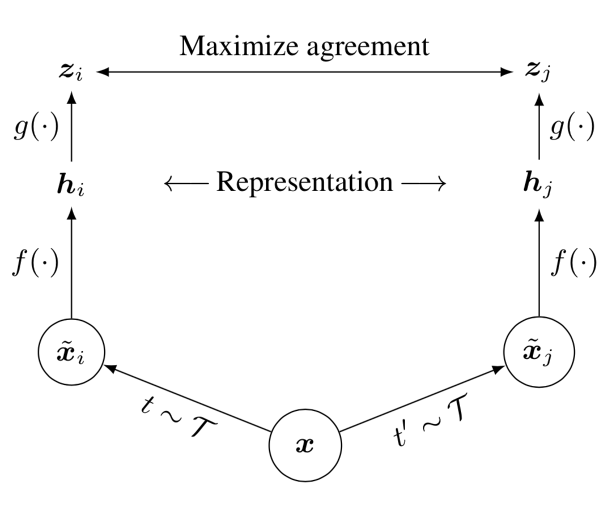
其中两个独立的数据增强算子t和t’从同一族增强\mathcal{T}中采样。数据增强包括随机裁剪、带随机翻转的缩放、颜色失真和高斯模糊。
其中\mathbb{1}_{[k \neq i]}是指示函数：当k\neq i时为 1，否则为 0。
SimCLR 需要较大的批量大小才能包含足够的负样本以获得良好性能。
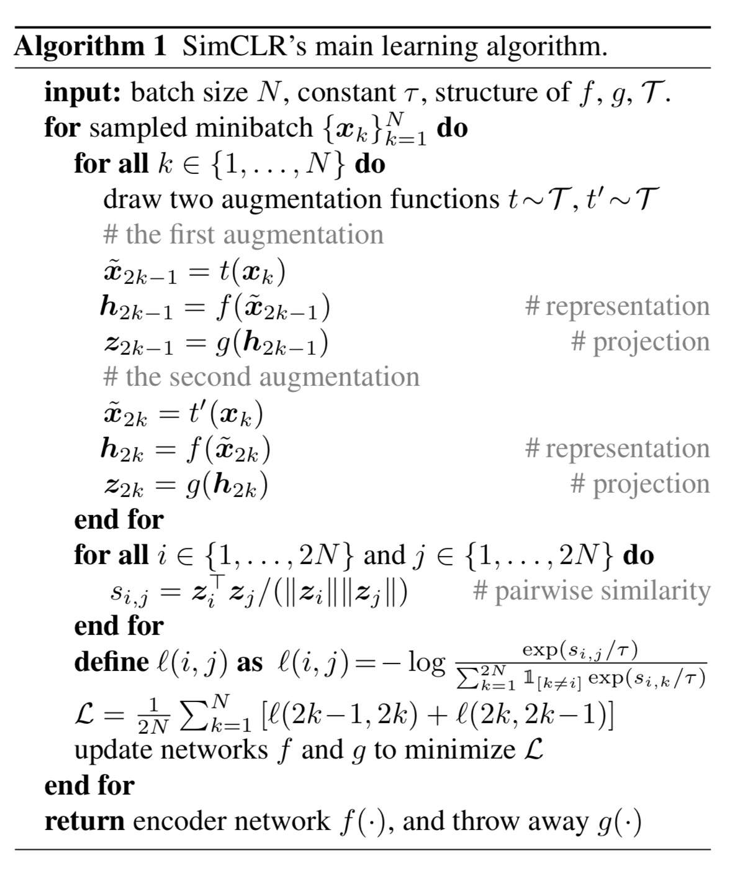
Barlow Twins#
Barlow Twins（Zbontar et al. 2021）将样本的两个失真版本输入到同一个网络中提取特征，并学习使这两组输出特征之间的互相关矩阵接近单位矩阵。目标是保持同一个样本不同失真版本的表示向量相似，同时最小化这些向量之间的冗余。
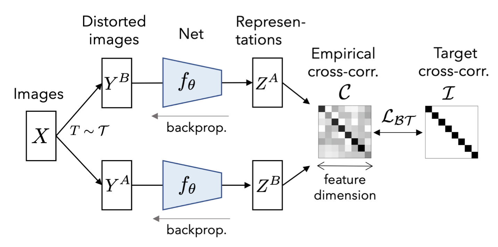
令\mathcal{C}为沿批次维度在两个相同网络输出之间计算的互相关矩阵。\mathcal{C}是一个方阵，大小与特征网络输出维度相同。矩阵\mathcal{C}_{ij}中的每个条目是在批次索引b和\mathbf{z}_{b,j}^B处，网络输出向量第i, j维与第\mathbf{z}_{b,i}^A维之间的余弦相似度，值域在 -1（完全反相关）和 1（完全相关）之间。
Barlow Twins 与自监督学习领域的 SOTA 方法具有竞争力。它自然避免了平凡常数解（即坍缩表示），并且对不同的训练批量大小具有鲁棒性。
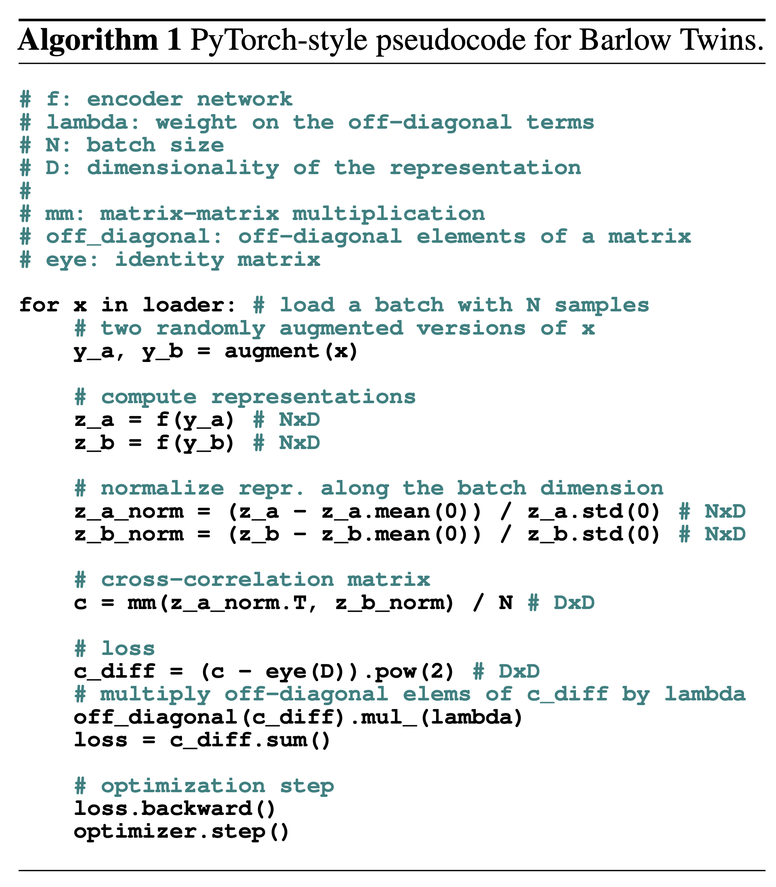
BYOL#
与上述方法不同，有趣的是，BYOL（Bootstrap Your Own Latent；Grill, et al 2020）声称在不使用负样本的情况下达到了新的 SOTA 结果。它依赖两个神经网络，称为在线网络和目标网络，它们相互交互并相互学习。目标网络（参数为\xi）与在线网络（参数为\theta）具有相同架构，但使用 Polyak 平均权重\xi \leftarrow \tau \xi + (1-\tau) \theta。
目标是学习一个可用于下游任务的表示y。由\theta参数化的在线网络包含：
目标网络具有相同的网络架构，但参数为\xi，通过 Polyak 平均更新\theta：\xi \leftarrow \tau \xi + (1-\tau) \theta。
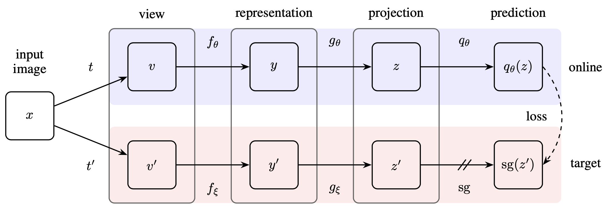
给定一张图像\mathbf{x}，BYOL 损失构造如下：
与大多数流行的基于对比学习的方法不同，BYOL 不使用负样本对。大多数自举方法依赖伪标签或聚类索引，但 BYOL 直接自举潜在表示。
在没有负样本的情况下 BYOL 仍能很好工作，这非常有趣且令人惊讶。后来我读到 Abe Fetterman & Josh Albrecht 撰写的这篇文章，他们在尝试复现 BYOL 时发现了两个令人惊讶的结论：
记忆库#
在每个批次中为大量负样本计算嵌入极其昂贵。一个常见的方法是将表示存储在内存中，用数据陈旧性换取更低的计算成本。
使用记忆库进行实例判别#
实例对比学习（Wu et al, 2018）将类别监督推向极致，将每个实例视为其自身的一个独立类别。这意味着“类别”的数量将与训练数据集中样本的数量相同。因此，使用如此多输出头的 softmax 层进行训练是不可行的，但可以用 NCE 来近似。
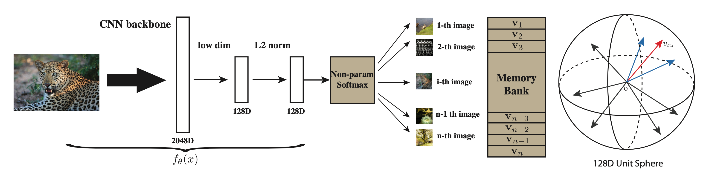
令\mathbf{v} = f_\theta(x)为要学习的嵌入函数，且向量被归一化到具有|\mathbf{v}|=1。一个非参数分类器使用温度参数\tau预测样本\mathbf{v}属于类别i的概率：
他们没有每次都为所有样本计算表示，而是实现了一个记忆库，用于存储来自过去迭代的样本表示。令V=\{ \mathbf{v}_i \}为记忆库，\mathbf{f}_i = f_\theta(\mathbf{x}_i)为前向网络生成的特征。当比较成对相似性时，我们可以使用来自记忆库的表示\mathbf{v}_i，而不是来自网络前向的特征\mathbf{f}_i。
分母理论上需要访问所有样本的表示，但在实践中代价太高。相反，我们可以通过使用M个随机索引\{j_k\}_{k=1}^M的蒙特卡洛近似来估计它。
由于每个类别只有一个实例，训练不稳定且波动很大。为了提高训练的平滑性，他们基于近端优化方法在损失函数中为正样本引入了一个额外项。最终的 NCE 损失目标如下：
其中\{ \mathbf{v}^{(t-1)} \}是前一次迭代存储在记忆库中的嵌入。随着学习到的嵌入收敛，迭代之间的差异|\mathbf{v}^{(t)}_i - \mathbf{v}^{(t-1)}_i|^2_2会逐渐消失。
MoCo & MoCo-V2#
动量对比（Momentum Contrast，MoCo；He et al, 2019）提供了一个将无监督视觉表示学习作为动态字典查找的框架。该字典被组织为一个大型的 FIFO 队列，存储数据样本的编码表示。
给定一个查询样本\mathbf{x}_q，我们通过编码器\mathbf{q} = f_q(\mathbf{x}_q)得到查询表示。字典中的一组键表示\{\mathbf{k}_1, \mathbf{k}_2, \dots \}由动量编码器\mathbf{k}_i = f_k (\mathbf{x}^k_i)编码。假设其中有一个与\mathbf{q}匹配的单个正键\mathbf{k}^+。论文中使用\mathbf{x}_q的不同增强的噪声副本创建\mathbf{k}^+。然后使用温度为\tau的 InfoNCE 对比损失，作用于一个正样本和N-1个负样本：
与记忆库相比，MoCo 中基于队列的字典使我们能够复用来自紧邻前几个小批次数据的表示。
MoCo 字典作为队列是不可微的，因此我们不能依赖反向传播来更新键编码器f_k。一种朴素的方法可能是对f_q和f_k使用相同的编码器。不同的是，MoCo 提出使用基于动量的更新，动量系数为m \in [0, 1)。例如，f_q和f_k的参数分别记为\theta_q和\theta_k。
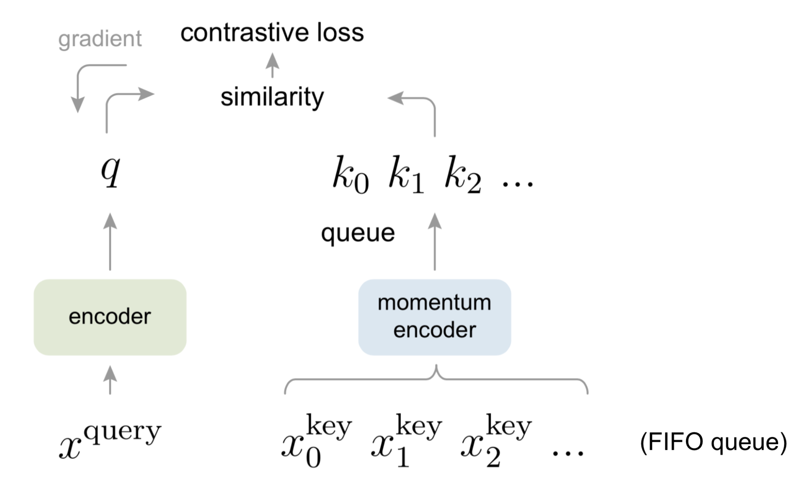
与 SimCLR 相比，MoCo 的优势在于它将批量大小与负样本数量解耦，而 SimCLR 需要较大的批量大小才能获得足够的负样本，并且在批量大小减小时性能会下降。
SimCLR 中的两个设计，即（1）MLP 投影头和（2）更强的数据增强，被证明非常有效。MoCo V2（Chen et al, 2020）结合了这两种设计，在不依赖极大批量大小的情况下实现了更好的迁移性能。
CURL#
CURL（Srinivas, et al. 2020）将上述思想应用于强化学习简史（长文）。它通过对比损失匹配原始观测o的两个数据增强版本o_q和o_k的嵌入，从而为强化学习任务学习视觉表示。CURL 主要依赖随机裁剪数据增强。键编码器实现为动量编码器，其权重是查询编码器权重的 EMA，与 MoCo 相同。
强化学习与有监督视觉任务的一个重要区别是，强化学习依赖于连续帧之间的时序一致性。因此，CURL 对每一帧堆叠一致地应用增强，以保留观测的时序结构信息。
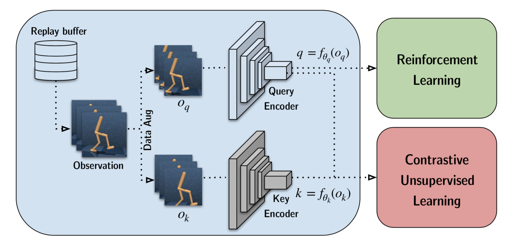
特征聚类#
DeepCluster#
DeepCluster（Caron et al. 2018）通过 k-means 迭代地对特征进行聚类，并将聚类分配作为伪标签提供监督信号。
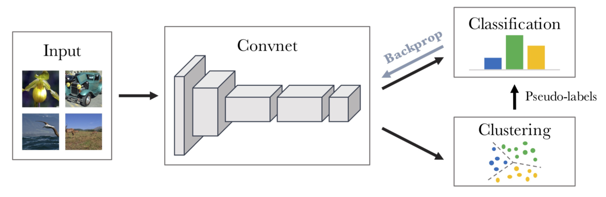
在每次迭代中，DeepCluster 使用先前的表示对数据点进行聚类，然后生成新的聚类分配作为新表示的分类目标。然而，这个迭代过程容易陷入平凡解。虽然避免了使用负样本对，但它需要昂贵的聚类阶段，并且需要特别注意以避免坍缩到平凡解。
SwAV#
SwAV（多个视图之间的分配交换；Caron et al. 2020）是一种在线对比学习算法。它从图像的增强版本计算一个码，并尝试使用同一图像的另一个增强版本来预测这个码。
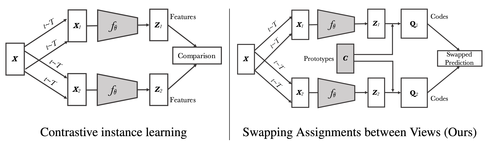
给定具有两种不同增强的图像特征\mathbf{z}_t和\mathbf{z}_s，SwAV 计算对应的码\mathbf{q}_t和\mathbf{q}_s，损失通过交换两个码并使用\ell(.)来衡量特征与码之间的拟合程度。
交换拟合预测依赖于预测码与一组K可训练原型向量\mathbf{C} = \{\mathbf{c}_1, \dots, \mathbf{c}_K\}之间的交叉熵。原型向量矩阵在不同批次之间共享，代表每个实例应被聚类到的锚点簇。
在包含B个特征向量\mathbf{Z} = [\mathbf{z}_1, \dots, \mathbf{z}_B]的小批量中，特征与原型向量之间的映射矩阵定义为\mathbf{Q} = [\mathbf{q}_1, \dots, \mathbf{q}_B] \in \mathbb{R}_+^{K\times B}。我们希望最大化特征与原型之间的相似性：
其中\mathcal{H}是熵，\mathcal{H}(\mathbf{Q}) = - \sum_{ij} \mathbf{Q}_{ij} \log \mathbf{Q}_{ij}控制码的平滑程度。系数\epsilon不应太大，否则所有样本将被均匀分配到所有簇中。\mathbf{Q}的候选解集要求每个映射矩阵的每一行之和为1/K，每一列之和为1/B，强制每个原型平均至少被选中B/K次。
SwAV 依赖迭代的 Sinkhorn-Knopp 算法（Cuturi 2013）来找到\mathbf{Q}的解。
使用有监督数据集#
CLIP#
CLIP（对比语言-图像预训练；Radford et al. 2021）在一个预测哪条描述对应哪张图像的预训练任务上联合训练文本编码器和图像特征提取器。
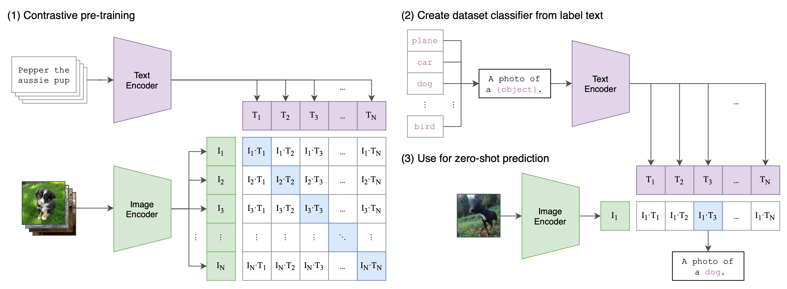
给定一批包含N个（图像，文本）对的数据，CLIP 计算该批次内所有N\times N种可能的（图像，文本）候选之间的密集余弦相似度矩阵。文本和图像编码器被联合训练，通过在密集矩阵上使用对称交叉熵损失，最大化N个正确（图像，文本）关联对之间的相似度，同时最小化N(N-1)个错误对之间的相似度。
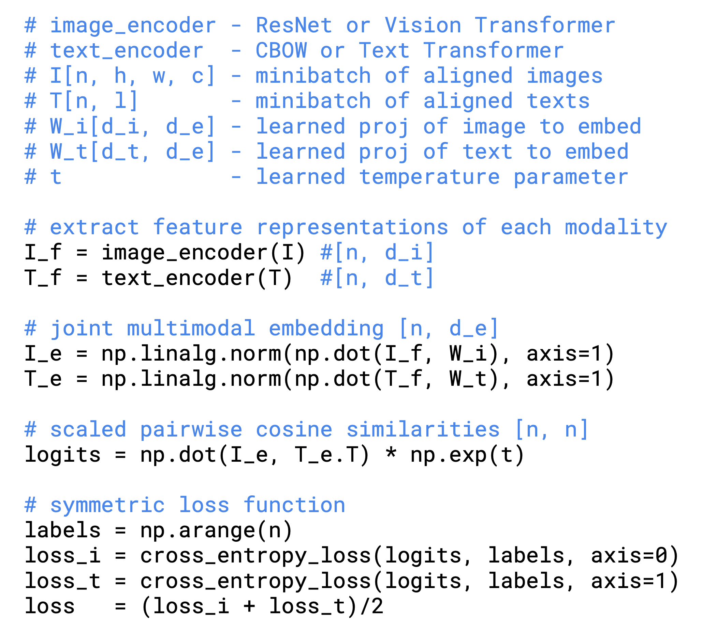
请参见 CLIP 算法的 NumPy 风格伪代码。（图片来源：Radford et al. 2021）
与上述其他学习良好视觉表示的方法相比，CLIP 真正特别之处在于“对使用自然语言作为训练信号的重视”。它确实需要访问已知哪段文本匹配哪张图像的有监督数据集。它在从互联网收集的 4 亿个（文本，图像）对上进行训练。查询列表包含英文维基百科中出现至少 100 次的所有单词。有趣的是，他们发现基于 Transformer 的语言模型在零样本 ImageNet 分类上比词袋（BoW）文本编码器慢 3 倍。使用对比目标而不是尝试预测与图像关联的确切单词（即图像描述预测任务中常用的方法）可以进一步将数据效率提高 4 倍。
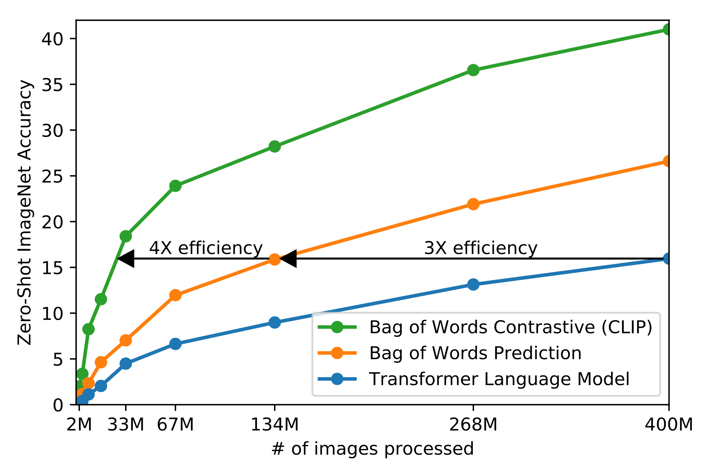
CLIP 产生了良好的视觉表示，可以非平凡地迁移到许多计算机视觉基准数据集上，达到与有监督基线具有竞争力的结果。在测试的迁移任务中，CLIP 在非常细粒度的分类以及抽象或系统性任务（如数物体数量）上表现较差。CLIP 模型的迁移性能与模型计算量平滑相关。
有监督对比学习#
交叉熵损失存在几个已知问题，例如对噪声标签缺乏鲁棒性以及可能产生较差的边际。现有的交叉熵损失改进方法涉及 curate 更好的训练数据，例如标签平滑和数据增强。有监督对比损失（Khosla et al. 2021）旨在比交叉熵更有效地利用标签信息，要求来自同一类别的归一化嵌入比来自不同类别的嵌入更接近。
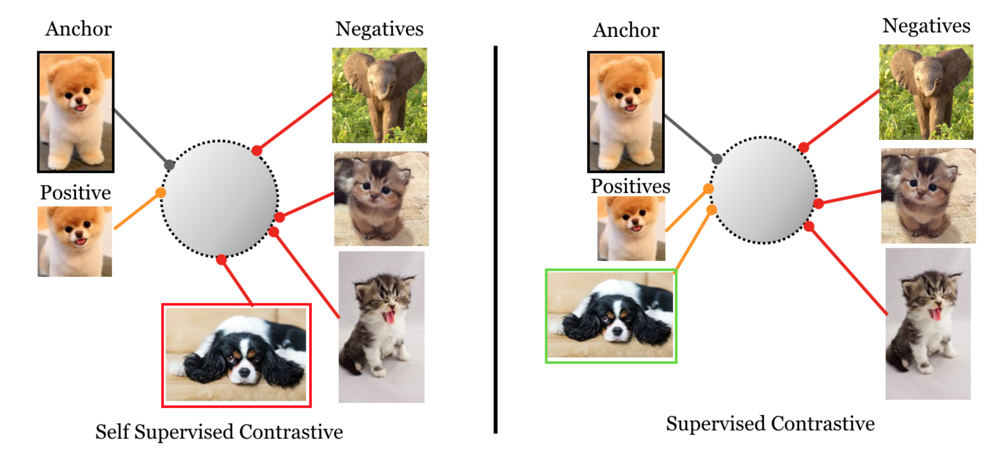
给定一组随机采样的n个（图像，标签）对\{\mathbf{x}_i, y_i\}_{i=1}^n，可以通过对每个样本应用两次随机增强来创建2n个训练对\{\tilde{\mathbf{x}}_i, \tilde{y}_i\}_{i=1}^{2n}。
有监督对比损失\mathcal{L}_\text{supcon}利用多个正负样本，非常类似于软近邻损失：
其中\mathbf{z}_k=P(E(\tilde{\mathbf{x}_k}))，E(.)是一个编码器网络（将增强图像映射为向量），P(.)是一个投影网络（将一个向量映射为另一个）。N_i= \{j \in I: \tilde{y}_j = \tilde{y}_i \}包含具有标签y_i的样本的索引集合。在集合N_i中包含更多正样本会带来更好的结果。
根据他们的实验，有监督对比损失：
语言：句子嵌入#
本节重点介绍如何学习句子嵌入。
文本增强#
视觉应用中的大多数对比方法依赖于为每个图像创建一个增强版本。然而，构造不改变句子语义的文本增强更为困难。本节我们介绍三种文本序列增强方法，包括词法编辑、回译以及应用 cutoff 或 dropout。
词法编辑#
EDA（Easy Data Augmentation；Wei & Zou 2019）定义了一组简单但强大的文本增强操作。给定一个句子，EDA 随机选择并应用以下四种简单操作之一：
其中p=\alpha和n=\alpha \times \text{sentence_length}，其直觉是较长的句子可以吸收更多噪声而不会改变原始标签。超参数\alpha大致表示一个句子中可能被一次增强改变的词的比例。
与不使用 EDA 的基线相比，EDA 被证明可以提高多个分类基准数据集上的分类准确率。在较小的训练集上性能提升更为显著。EDA 中的所有四种操作都有助于提高分类准确率，但在不同的\alpha下达到最优。

在 Contextual Augmentation（Sosuke Kobayashi, 2018）中，位置i处的词w_i的新替代表可以从给定的概率分布p(.\mid S\setminus\{w_i\})中平滑采样，该分布由类似 BERT 的双向语言模型预测。
回译#
CERT（Contrastive self-supervised Encoder Representations from Transformers；Fang et al. (2020)；代码）通过回译生成增强句子。可以使用不同语言的各种翻译模型来创建不同版本的增强。一旦我们有了文本样本的噪声版本，上面介绍的许多对比学习框架，例如 MoCo，就可以用来学习句子嵌入。
Dropout 和 Cutoff#
Shen et al. (2020)受通用语言模型启发，提出将 Cutoff 应用于文本增强。他们提出了三种 cutoff 增强策略：
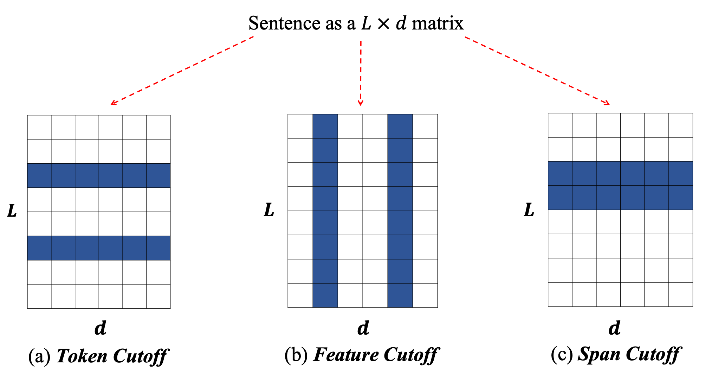
可以创建样本的多个增强版本。在训练时，Shen et al. (2020)应用了一个额外的 KL 散度项来衡量来自不同增强样本的预测之间的一致性。
SimCSE（Gao et al. 2021；代码）通过仅使用 dropout 噪声从自身预测句子来从无监督数据中学习。换句话说，他们将 dropout 视为文本序列的数据增强。一个样本被以不同的 dropout mask 两次输入到编码器，这两个版本构成正样本对，而批内其他样本被视为负样本对。这与 cutoff 增强感觉非常相似，但 dropout 更加灵活，对被掩盖内容语义含义的定义不那么严格。
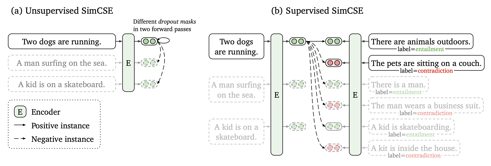
他们在 7 个 STS（语义文本相似性）数据集上进行了实验，并计算句子嵌入之间的余弦相似度。他们还尝试了一个可选的 MLM 辅助目标损失，以帮助避免灾难性遗忘 token 级知识。这个辅助损失被发现有助于提升迁移任务的性能，但在主要 STS 任务上性能一致下降。
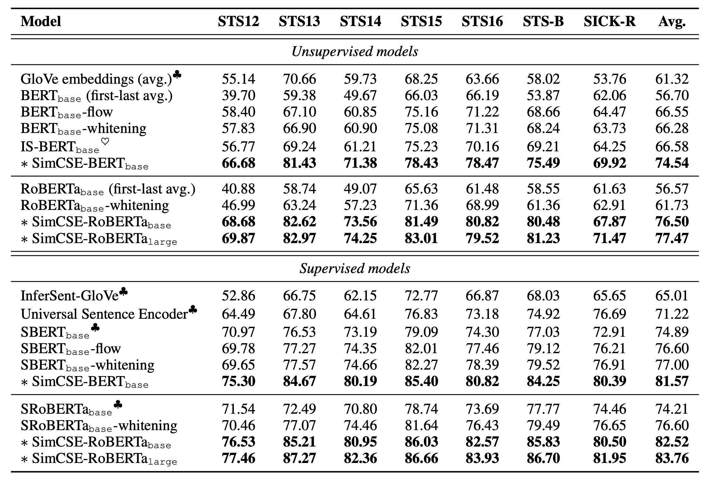
来自 NLI 的监督#
未经任何微调的预训练 BERT 句子嵌入在语义相似性任务上表现很差。我们不能直接使用原始嵌入，而是需要通过进一步微调来优化嵌入。
自然语言推理（NLI）任务是提供学习句子嵌入监督信号的主要数据来源，例如SNLI、MNLI和QQP。
Sentence-BERT#
SBERT（Sentence-BERT）（Reimers & Gurevych, 2019）依赖孪生网络和三元组网络架构来学习句子嵌入，使得句子相似性可以通过嵌入对之间的余弦相似度来估计。请注意，学习 SBERT 依赖有监督数据，因为它是在多个 NLI 数据集上进行微调的。
他们在 BERT 模型之上实验了几种不同的预测头：
在实验中，哪种目标函数表现最好取决于数据集，因此没有通用的赢家。
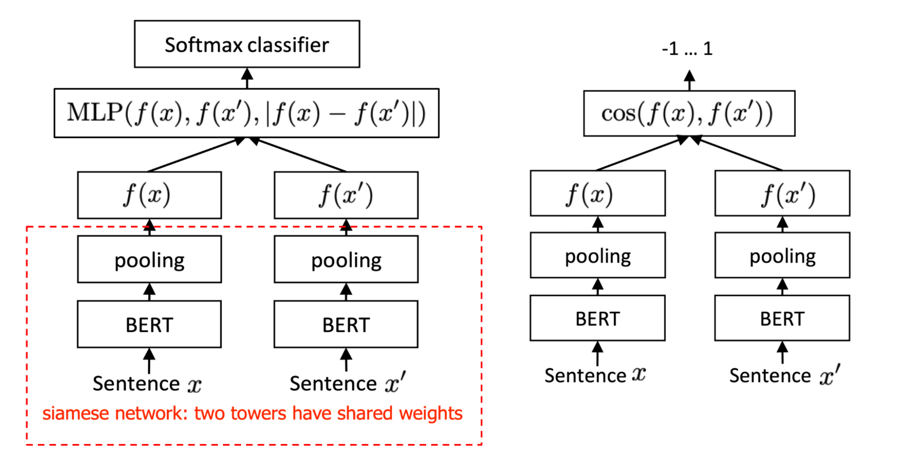
SentEval库（Conneau and Kiela, 2018）通常用于评估学习到的句子嵌入的质量。在当时（2019 年 8 月），SBERT 在 7 个任务中的 5 个上优于其他基线。
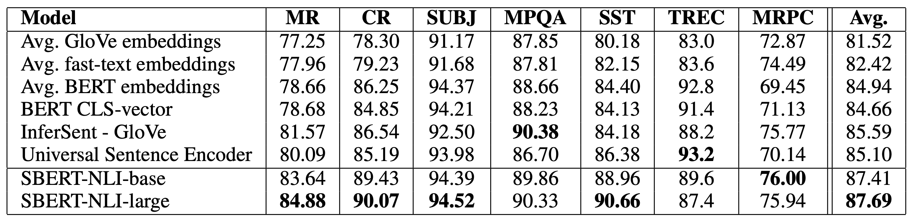
BERT-flow#
如果嵌入在每个维度上均匀分布，则嵌入表示空间被认为是各向同性的；否则是各向异性的。Li et al, (2020)表明，预训练的 BERT 学习到一个非光滑、各向异性的句子嵌入语义空间，因此在没有微调的情况下对文本相似性任务表现很差。经验上，他们观察到 BERT 句子嵌入的两个问题： 词频会使嵌入空间产生偏差。高频词靠近原点，而低频词远离原点。 低频词分布稀疏。低频词的嵌入往往与其k-近邻距离较远，而高频词的嵌入则更密集地聚集。
BERT-flow（Li et al, 2020；代码）被提出通过基于流的深度生成模型将嵌入变换为平滑且各向同性的高斯分布。
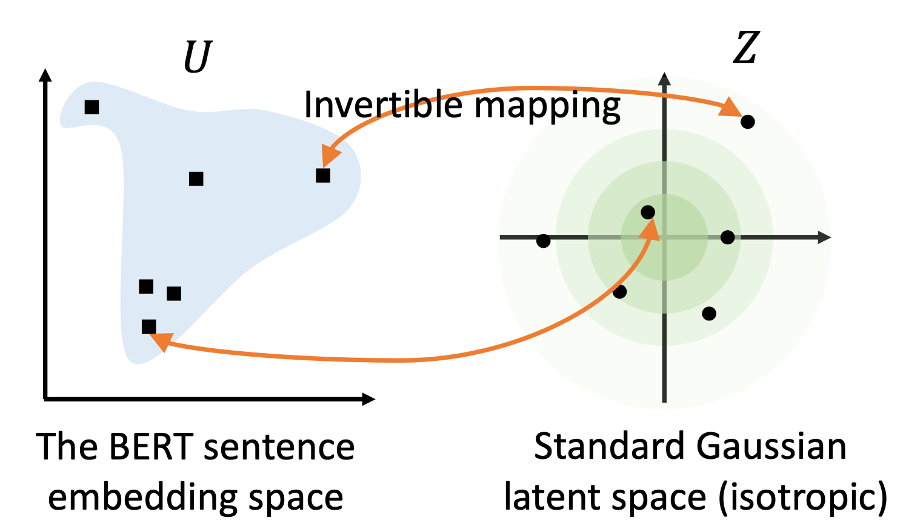
令\mathcal{U}为观测到的 BERT 句子嵌入空间，\mathcal{Z}为期望的潜在空间，它是一个标准高斯。因此，p_\mathcal{Z}是一个高斯密度函数，f_\phi: \mathcal{Z}\to\mathcal{U}是一个可逆变换：
基于流的生成模型通过最大化\mathcal{U}的边际似然来学习可逆映射函数：
其中s是从文本语料库\mathcal{D}中采样的句子。仅优化流参数\phi，而预训练 BERT 中的参数保持不变。
BERT-flow 被证明可以在有或没有来自 NLI 数据集监督的情况下提升大多数 STS 任务的性能。因为用于校准的学习归一化流不需要标签，它可以利用包括验证集和测试集在内的整个数据集。
白化操作#
Su et al. (2021)应用白化操作来提升学习到的表示的各向同性，同时降低句子嵌入的维度。
他们将句子向量的均值变换为 0，将协方差矩阵变换为单位矩阵。给定一组样本\{\mathbf{x}_i\}_{i=1}^N，令\tilde{\mathbf{x}}_i和\tilde{\Sigma}为变换后的样本及其对应的协方差矩阵：
如果我们对\Sigma = U\Lambda U^\top进行SVD分解，将得到W^{-1}=\sqrt{\Lambda} U^\top和W=U\sqrt{\Lambda^{-1}}。注意在 SVD 中，U是一个正交矩阵，其列向量为特征向量，\Lambda是一个对角矩阵，所有元素为排序后的正特征值。
可以通过仅取W的前k列来进行维度约简，称为 Whitening-k。
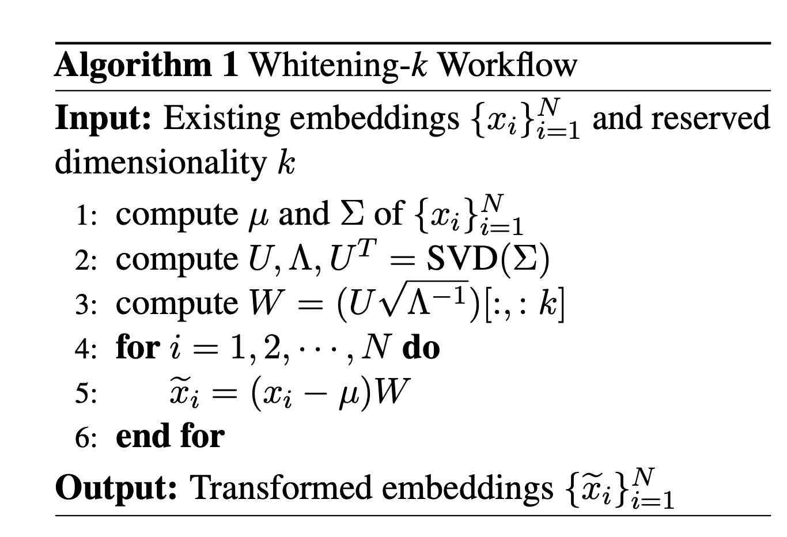
白化操作被证明优于 BERT-flow，并在许多 STS 基准上以 256 维句子嵌入达到 SOTA，无论是否有 NLI 监督。
无监督句子嵌入学习#
上下文预测#
Quick-Thought（QT）向量（Logeswaran & Lee, 2018）将句子表示学习表述为一个分类问题：给定一个句子及其上下文，分类器根据它们的向量表示区分上下文句子与其他对比句子（通用语言模型）。这种表述去掉了导致训练变慢的 softmax 输出层。
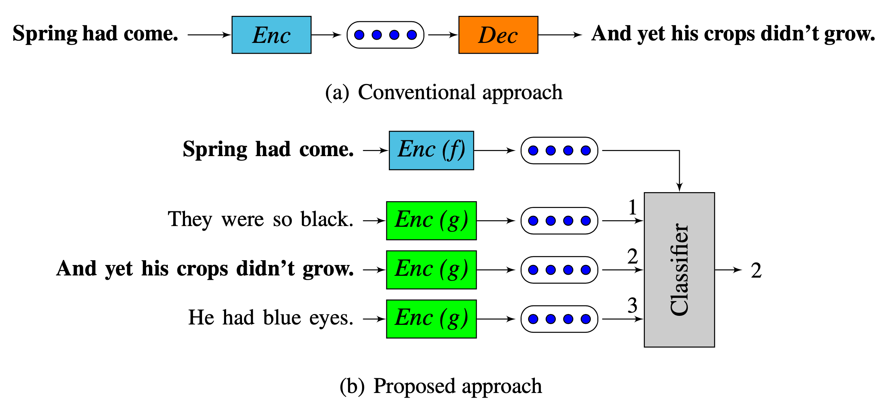
令f(.)和g(.)是两个将句子s编码为定长向量的函数。令C(s)是s上下文中的句子集合，S(s)是候选句子集合，其中只包含一个真实上下文句子s_c \in C(s)和许多其他非上下文负样本句子。Quick Thoughts 模型学习优化预测唯一真实上下文句子s_c \in S(s)的概率。当将句子(s, s_c)视为正样本对，而其他(s, s’)（其中s’ \in S(s), s’\neq s_c）视为负样本对时，它本质上是 NCE 损失。
互信息最大化#
IS-BERT（Info-Sentence BERT）（Zhang et al. 2020；代码）采用基于互信息最大化的自监督学习目标，以无监督方式学习良好的句子嵌入。
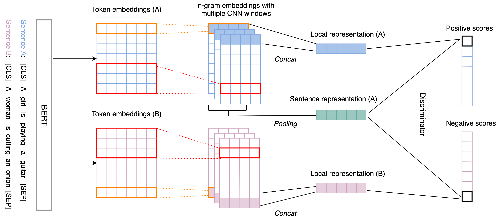
IS-BERT 的工作流程如下：
由于互信息估计对于连续且高维随机变量通常是不可行的，IS-BERT 依赖 Jensen-Shannon 估计器（Nowozin et al., 2016，Hjelm et al., 2019）来最大化\mathcal{E}_\theta(\mathbf{x})和\mathcal{F}_\theta^{(i)} (\mathbf{x})之间的互信息。
其中T_\omega: \mathcal{F}\times\mathcal{E} \to \mathbb{R}是一个带有参数\omega的可学习网络，用于生成判别器分数。负样本\mathbf{x}’从分布\tilde{P}=P中采样。\text{sp}(x)=\log(1+e^x)是 softplus 激活函数。
IS-BERT 在 SentEval 上的无监督结果优于大多数无监督基线（2020 年 9 月），但不出意外地弱于有监督运行。当使用带标签的 NLI 数据集时，IS-BERT 产生的结果与 SBERT 相当（见图 25 和 30）。
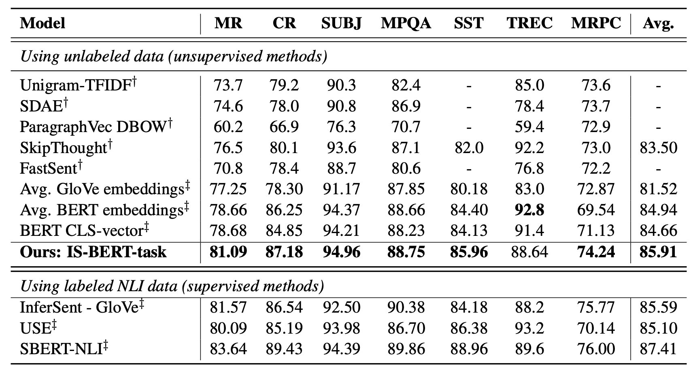
引用#
引用格式：
Weng, Lilian. (May 2021). Contrastive representation learning. Lil’Log. https://lilianweng.github.io/posts/2021-05-31-contrastive/.
@article{weng2021contrastive,
title = "Contrastive Representation Learning",
author = "Weng, Lilian",
journal = "lilianweng.github.io",
year = "2021",
month = "May",
url = "https://lilianweng.github.io/posts/2021-05-31-contrastive/"
}
参考文献#
[1] Sumit Chopra, Raia Hadsell and Yann LeCun. “Learning a similarity metric discriminatively, with application to face verification.” CVPR 2005.
[2] Florian Schroff, Dmitry Kalenichenko and James Philbin. “FaceNet: A Unified Embedding for Face Recognition and Clustering.” CVPR 2015.
[3] Hyun Oh Song et al. “Deep Metric Learning via Lifted Structured Feature Embedding.” CVPR 2016. [code]
[4] Ruslan Salakhutdinov and Geoff Hinton. “Learning a Nonlinear Embedding by Preserving Class Neighbourhood Structure” AISTATS 2007.
[5] Michael Gutmann and Aapo Hyvärinen. “Noise-contrastive estimation: A new estimation principle for unnormalized statistical models.” AISTATS 2010.
[6] Kihyuk Sohn et al. “Improved Deep Metric Learning with Multi-class N-pair Loss Objective” NIPS 2016.
[7] Nicholas Frosst, Nicolas Papernot and Geoffrey Hinton. “Analyzing and Improving Representations with the Soft Nearest Neighbor Loss.” ICML 2019
[8] Tongzhou Wang and Phillip Isola. “Understanding Contrastive Representation Learning through Alignment and Uniformity on the Hypersphere.” ICML 2020. [code]
[9] Zhirong Wu et al. “Unsupervised feature learning via non-parametric instance-level discrimination.” CVPR 2018.
[10] Ekin D. Cubuk et al. “AutoAugment: Learning augmentation policies from data.” arXiv preprint arXiv:1805.09501 (2018).
[11] Daniel Ho et al. “Population Based Augmentation: Efficient Learning of Augmentation Policy Schedules.” ICML 2019.
[12] Ekin D. Cubuk & Barret Zoph et al. “RandAugment: Practical automated data augmentation with a reduced search space.” arXiv preprint arXiv:1909.13719 (2019).
[13] Hongyi Zhang et al. “mixup: Beyond Empirical Risk Minimization.” ICLR 2017.
[14] Sangdoo Yun et al. “CutMix: Regularization Strategy to Train Strong Classifiers with Localizable Features.” ICCV 2019.
[15] Yannis Kalantidis et al. “Mixing of Contrastive Hard Negatives” NeuriPS 2020.
[16] Ashish Jaiswal et al. “A Survey on Contrastive Self-Supervised Learning.” arXiv preprint arXiv:2011.00362 (2021)
[17] Jure Zbontar et al. “Barlow Twins: Self-Supervised Learning via Redundancy Reduction.” arXiv preprint arXiv:2103.03230 (2021) [code]
[18] Alec Radford, et al. “Learning Transferable Visual Models From Natural Language Supervision” arXiv preprint arXiv:2103.00020 (2021)
[19] Mathilde Caron et al. “Unsupervised Learning of Visual Features by Contrasting Cluster Assignments (SwAV).” NeuriPS 2020.
[20] Mathilde Caron et al. “Deep Clustering for Unsupervised Learning of Visual Features.” ECCV 2018.
[21] Prannay Khosla et al. “Supervised Contrastive Learning.” NeurIPS 2020.
[22] Aaron van den Oord, Yazhe Li & Oriol Vinyals. “Representation Learning with Contrastive Predictive Coding” arXiv preprint arXiv:1807.03748 (2018).
[23] Jason Wei and Kai Zou. “EDA: Easy data augmentation techniques for boosting performance on text classification tasks.” EMNLP-IJCNLP 2019.
[24] Sosuke Kobayashi. “Contextual Augmentation: Data Augmentation by Words with Paradigmatic Relations.” NAACL 2018
[25] Hongchao Fang et al. “CERT: Contrastive self-supervised learning for language understanding.” arXiv preprint arXiv:2005.12766 (2020).
[26] Dinghan Shen et al. “A Simple but Tough-to-Beat Data Augmentation Approach for Natural Language Understanding and Generation.” arXiv preprint arXiv:2009.13818 (2020) [code]
[27] Tianyu Gao et al. “SimCSE: Simple Contrastive Learning of Sentence Embeddings.” arXiv preprint arXiv:2104.08821 (2020). [code]
[28] Nils Reimers and Iryna Gurevych. “Sentence-BERT: Sentence embeddings using Siamese BERT-networks.” EMNLP 2019.
[29] Jianlin Su et al. “Whitening sentence representations for better semantics and faster retrieval.” arXiv preprint arXiv:2103.15316 (2021). [code]
[30] Yan Zhang et al. “An unsupervised sentence embedding method by mutual information maximization.” EMNLP 2020. [code]
[31] Bohan Li et al. “On the sentence embeddings from pre-trained language models.” EMNLP 2020.
[32] Lajanugen Logeswaran and Honglak Lee. “An efficient framework for learning sentence representations.” ICLR 2018.
[33] Joshua Robinson, et al. “Contrastive Learning with Hard Negative Samples.” ICLR 2021.
[34] Ching-Yao Chuang et al. “Debiased Contrastive Learning.” NeuriPS 2020.